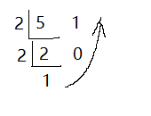

日常的学习笔记，包括 ES6、Promise、Node.js、Webpack、http 原理、Vue全家桶，后续可能还会继续更新 Typescript、Vue3 和 常见的面试题 等等。
二进制
所谓 二进制，就是只用 0 与 1 两个数字，在计数与计算时必须是 逢2进1 （如十进制的 10 就是二进制的 1010）。
计算机中所有的内容全都是以 二进制 的形式进行存储的，而数据也都是以 二进制 的形式来表现的。
精度问题
参考文献 Floating Point Math
我们首先来思考一个问题，0.1 + 0.2 === 0.3 的输出结果是什么？
来看一下这道最经典的面试题。
1 | console.log(0.1 + 0.2 === 0.3); |
这道题的结果是 false ，我们通过控制台打印可以发现， 0.1 + 0.2 的结果并不是 0.3。
1 | console.log(0.1 + 0.2); // 0.30000000000000004 |
导致这个问题的原因就和计算机的 二进制存储 有关。
首先我们要先明确计算机数据存储的两个概念。
- 计算机将所有数据以 二进制 的形式存储。
- 计算机用 有限的大小 来存储数据。（因为现实生活中不存在无限大的内存或硬盘）
计算机中的 *最小单位是 *位（bit，比特） **。
1 | - 8 bit => 1 byte; |
我们在进行数据存储时，一般以 字节 来进行存储。
字节（byte） 的最大值和最小值是 0~255 ，也就是说取值范围是 255 。
取值范围的 255 是因为计算机是通过 二进制来进行数据存储 。
进制的转换
二进制顾名思义就是 逢2进1，十进制就是 逢10进1。
又因为 8bit = 1byte，所以他们之间相差 255。
二进制 转 十进制 其实就是 当前位的值乘以进制（2），次幂是当前所在位，也就是 1*2^n。
具体计算代码如下。
1 | let sum = 0; |
计算公式如下。
$$
∵ 12^n 且 n<8
∴ s = 12^0 + 12^2 + … + 12^7
$$
从 十进制 转 二进制，就是 当前数除以进制（2），并取余。然后将余数倒退，就是最终的结果。比如，5 的二进制就是 101。

在代码中，我们一般使用 parseInt() 把 任意进制 转成 十进制。使用 toString() 把 十进制 转成 任意进制。
- 使用
0x前缀表示 十六进制，0o前缀表示 八进制，0b前缀表示 二进制。如0x64表示 十进制的100，0o555表示 十进制的365，0b1111表示 十进制的15。 toString()如果不填入参数，则默认转换成 十进制。
1 | // 任意进制 转成 十进制 |
小数转换
再回到我们最上面的题目。
我们现在需要算的是 小数（浮点数），那么我们将小数转换成二进制进行存储，我们就需要用到 乘二取整法。
将 小数（浮点数）乘以2，若计算结果包含整数，则取出整数，记为1。反之则记为0。
如 0.5 * 2 = 1 …… 0 ，则 0.5 的二进制为 0.1。
现在我们来看一下， 0.1 的二进制是多少。
1 | // 乘二取整法 |
我们可以发现，结果是一个无限循环的二进制数 0.0001100110011001100110011001100110011001100110011001101。
同理我们也可以算出，0.2 的二进制是 0.001100110011001100110011001100110011001100110011001101。
我们可以发现，0.1 与 0.2 的二进制差了一位，无线数在计算机内部存储时会有长度限制，所以最终会存在错位的情况。
所以其十进制结果，最后会有几个 二进制单位的1 无法被计算。
这样才会导致 0.1 + 0.2 === 0.30000000000000004。
精度问题的解决方案
推荐使用 Math.js 进行处理，他支持 BigNumber 的数据类型。
1 | const math = require('mathjs'); |
本篇文章由 莫小尚 创作，文章中如有任何问题和纰漏，欢迎您的指正与交流。
您也可以关注我的 个人站点、博客园 和 掘金，我会在文章产出后同步上传到这些平台上。
最后感谢您的支持！